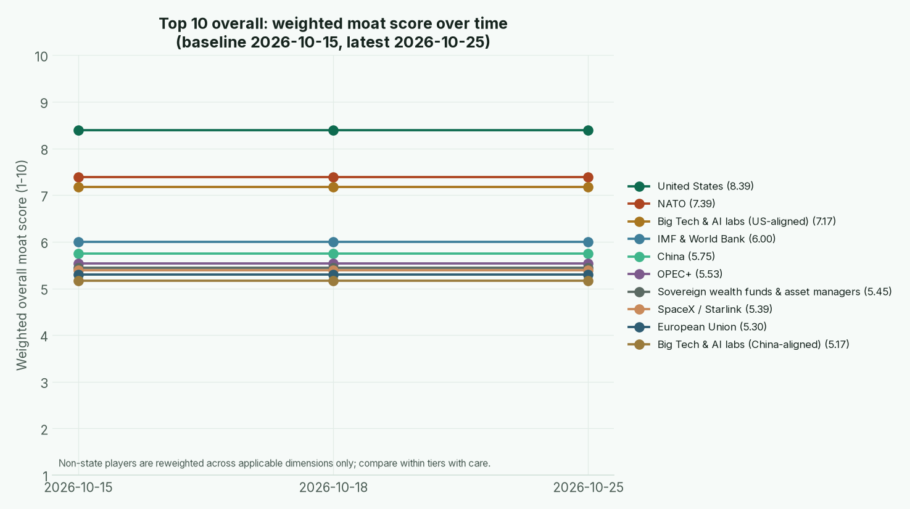
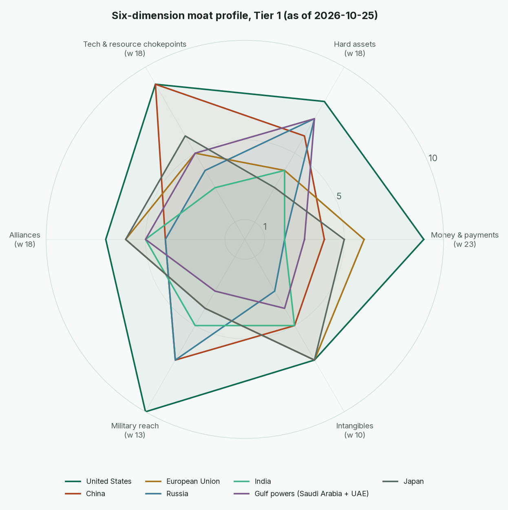

Master board · updated 2026-10-18 (baseline 2026-10-15) · kept by Warren for Tyler · weekly issues: 2026-10-15 · 2026-10-18
"Son, the headline tells you who shouted. The moat tells you who still collects the toll ten years from now. We score the moat."
How to read it. Each player gets a 1-10 moat score on six dimensions, weighted Money 23, Hard assets 18, Tech & resource chokepoints 18, Alliances 18, Military reach 13, Intangibles 10. Where a dimension doesn't fit a non-state player it's marked N/A and the rest are reweighted proportionally. Every cell shows the score and a confidence letter: H (high: official data, recent), M (medium: credible but partial or a judgment on solid data), L (low: thin data or not re-verified this week). Trend tags: ▲ Rising, ► Steady, ▼ Slipping, ◆ Contested (credible sources pull both ways).
Rules (locked 2026-10-15, 20:34 Bangkok). Scores can move any amount on strong evidence. A move of 2+ points needs a cited source and its own bear case. Scores move only on operating events, not announcements. Sources that can move a score: official data (IMF, central banks, trade statistics), Reuters, Bloomberg, FT, CSIS, Brookings, Carnegie. Xinhua, TASS, Al Jazeera, and Gulf and Indian press need an independent second source. X, Telegram and market chatter are early signals only. When credible sources conflict, hold the score and note the dispute. Intangibles is rescored quarterly only.
| Dimension (weight) | 10 = | 5 = | 1 = |
|---|---|---|---|
| Money & payments (23) | Your currency is the world's default for reserves, invoicing and settlement (over half of COFER reserves and Swift payments), with the deepest capital markets and the payment rails others must use or be sanctioned off. | A secondary reserve or regional currency (roughly 2-20% of reserves) or national rails with real but limited cross-border use. | No international use; you settle in someone else's currency, on someone else's rails, often under capital controls or sanctions. |
| Hard assets (18) | Self-sufficient and a net exporter in energy, food and key minerals; large gold and FX reserves; deep strategic stocks; real assets that can't be frozen. | Mixed: self-sufficient in some essentials, import-dependent in others; moderate reserves. | Imports most energy and food, thin reserves, assets held where others can freeze them. |
| Tech & resource chokepoints (18) | Controls at least one operating chokepoint others cannot route around within five years: frontier chips and AI compute, mineral refining, or a strategic strait or pipeline. | A credible number two, or owner of a few niche chokepoints others can work around at a cost. | Wholly dependent on others' technology, refining and transit routes. |
| Alliances (18) | Treaty allies with credible collective defence, plus an economic bloc that members pay to stay in; partners line up without being bribed. | Useful partnerships, mostly transactional; some institutional anchors. | Isolated; partners are clients or captives. |
| Military reach (13) | Global power projection: sustained operations in several theatres at once, blue-water navy, secure second-strike nuclear force. | A strong regional power that can defend its neighbourhood and project force nearby. | Cannot reliably defend its own territory or sea lanes. |
| Intangibles (10, rescored quarterly) | Rule of law and institutions foreigners trust with their money (World Bank WGI top decile), a talent magnet, healthy demographics, soft power. | Middling governance and appeal; some talent pull, some drain. | Failing institutions, capital and talent flight, little attraction. |

Two Sundays in, the lines are flat at the top, and that's the honest answer: nobody in the top ten did anything this week that changes a moat. This week's two moves both sit below the top ten: Iran 3.47 to 3.29 and Russia 4.19 to 4.37. Mind the apples and oranges: NATO, Big Tech and the IMF are scored only on the dimensions that fit them, so a 7 for a club isn't the same animal as a 7 for a country. States only, the top three are the United States (8.39), China (5.75) and the EU (5.30).

| Player | Weighted overall | Money 23 | Hard assets 18 | Tech/choke 18 | Alliances 18 | Military 13 | Intangibles 10 | Confidence | Trend | Basis (sources below) |
|---|---|---|---|---|---|---|---|---|---|---|
| United States | 8.39 | 9 (H) | 8 (M) | 9 (H) | 7 (M) | 10 (H) | 7 (M) | High | ▼ Slipping | USD 56.70% of reserves (COFER Q2-26, down from 57.18%); SIPRI: $954bn, still 33% of world milex but -7.5% y/y; AI Index: 59 notable models vs China 35. |
| China | 5.75 | 4 (H) | 6 (M) | 9 (H) | 4 (M) | 7 (H) | 5 (L) | High | ▲ Rising | RMB 2.11% of reserves (COFER); CIPS RMB 180tn in 2025; PBoC 77.47m oz (~2,410t) end-Sep, +0.74m oz, 23rd straight month (SAFE official, 7 Oct); Sep exports +29.6% y/y in CNY, Jan-Sep surplus ~$938bn (China Customs, AP); 69% of rare-earth mining, ~85% of RE refining (USGS/IEA); $336bn milex (SIPRI). |
| European Union | 5.30 | 6 (H) | 4 (M) | 5 (M) | 6 (M) | 4 (M) | 7 (M) | Medium | ▲ Rising | Euro share up to 20.60% from 20.04%, largest gain, 'mostly active purchasing' (COFER Q2-26). Europe milex +14% to $864bn (SIPRI). European Council 15-16 Oct: ~EUR 210bn Russian assets stay frozen, still no reparations loan (Consilium; Politico). |
| Japan | 5.07 | 5 (H) | 3 (M) | 6 (L) | 6 (M) | 4 (M) | 7 (M) | Medium | ▼ Slipping | Yen share fell to 4.96% from 5.43% on active selling (COFER Q2-26); joint US-Japan yen intervention 31 Jul (MoF Japan, Reuters); BoJ hiked to 1.25% on 18 Sep. Tech score rests on known chip-materials strength; not re-verified this week. |
| Gulf powers (Saudi Arabia + UAE) | 4.54 | 3 (M) | 7 (H) | 5 (M) | 5 (M) | 3 (M) | 4 (L) | Medium | ◆ Contested | Saudi crude 8.3 mb/d in Sep vs 12.11 sustainable capacity (IEA); East-West pipeline bombed 11 Sep then restored; Houthi strikes on Riyadh airport and Aramco HQ (AP, BBC), more missiles at Riyadh and Medina 14-15 Oct (AP); Aramco Nov Asia OSPs at 6-yr low; Saudi wellhead 8.96 mb/d Sep (Kpler, 16 Oct). Gulf SWFs sit inside the $15.1tn SWF pool (Global SWF). |
| Russia | 4.37 | 2 (M) | 7 (M) | 4 (M) | 4 (M) | 7 (M) | 3 (L) | Medium | ◆ Contested | Alliances 3 to 4 on 18 Oct: US Treasury licence for Russian diesel to 7 Apr 2027 and Graham Act tariff waiver signed 16 Oct (Reuters, CNBC), offset by IMFC walkout in Bangkok (CNBC, Guardian). Ryazan refinery hit again 15 Oct as energy truce collapsed (AP, Reuters). Net gold seller in 2026 (WGC Q2/June); $190bn milex = 7.5% of GDP (SIPRI); refining degraded by Ukrainian drones (IEA OMR Sep/Oct); crude output 8.43 mb/d vs 9.95 implied target (IEA). |
| India | 3.77 | 2 (M) | 4 (M) | 3 (M) | 5 (M) | 5 (M) | 5 (L) | Medium | ► Steady | $92.1bn milex, #5 (SIPRI); hosted BRICS New Delhi summit, no currency (Declaration, Reuters); record $112bn deficit with China in FY to Mar-26 (NUS EAI citing official data). |
| Player | Weighted overall | Money 23 | Hard assets 18 | Tech/choke 18 | Alliances 18 | Military 13 | Intangibles 10 | Confidence | Trend | Basis (sources below) |
|---|---|---|---|---|---|---|---|---|---|---|
| NATO | 7.39 | N/A | N/A | N/A | 7 (M) | 9 (H) | 6 (M) | Medium | ▲ Rising | 32 members = $1,581bn, 55% of world milex (SIPRI); 5 allies already >3.5% core defence, Europe+Canada 2.53% of GDP in 2026 (NATO, Reuters). Bear case: depends on US political commitment. |
| Big Tech & AI labs (US-aligned) | 7.17 | N/A | N/A | 9 (H) | 6 (M) | N/A | 6 (M) | Medium | ▲ Rising | Nvidia supplies >60% of ~17.1m H100-eq global AI compute; US 59 notable models in 2025 (Stanford AI Index 2026). |
| IMF & World Bank | 6.00 | 6 (M) | N/A | N/A | 6 (M) | N/A | 6 (M) | Medium | ► Steady | Custodian of COFER and WEO (3.1% world growth 2026, 4.7% inflation); lender of last resort to energy importers under strain. Bangkok Annual Meetings 12-18 Oct: IMFC 'no room for complacency'; nearly half of delegates walked out on Russia's Siluanov (CNBC, Guardian). |
| OPEC+ | 5.53 | N/A | 8 (H) | 6 (M) | 4 (M) | N/A | 3 (M) | Medium | ◆ Contested | 34.8 mb/d crude in Sep; 43.9 mb/d sustainable capacity; OPEC+18 5.42 mb/d below targets (IEA OMR Oct). Saudi chasing market share = cohesion risk. |
| Sovereign wealth funds & asset managers | 5.45 | 6 (M) | 5 (M) | N/A | N/A | N/A | 5 (L) | Medium | ▲ Rising | SWFs ~$15.1tn AUM across 109 funds, Apr-26 (Global SWF 2026). Asset-manager AUM not verified this week. |
| SpaceX / Starlink | 5.39 | N/A | N/A | 8 (M) | 3 (M) | N/A | 5 (L) | Medium | ▲ Rising | ~11,100 satellites in orbit (tracker sites, unverified vs official); 12m subscribers end-Jun (WSJ); ~13.5m Oct (Deutsche Bank via secondary). Key-man and single-owner risk weighs on alliances: Ukraine military Starlink/Starshield service restricted 14 Oct, only partly restored by 17 Oct (AP, CBS). |
| Big Tech & AI labs (China-aligned) | 5.17 | N/A | N/A | 6 (M) | 5 (M) | N/A | 4 (L) | Medium | ▲ Rising | US-China top-model gap 2.7% (Mar-26); China leads publications and patents; Huawei a small but growing share of compute (Stanford AI Index 2026). |
| United Kingdom | 5.02 | 5 (M) | 3 (M) | 5 (L) | 6 (M) | 5 (M) | 7 (M) | Medium | ► Steady | Sterling share up 0.16pp (COFER Q2-26); UK = 6.89% of offshore RMB payments (Swift tracker via secondary); #6 milex (SIPRI). |
| Commodity traders | 4.96 | N/A | 6 (L) | 5 (L) | N/A | N/A | 3 (L) | Low | ▲ Rising | Record freight and STS-transfer economics (IEA OMR Oct; Reuters). No trader-level data verified: low confidence. |
| ASEAN | 4.36 | N/A | N/A | N/A | 4 (L) | N/A | 5 (L) | Low | ► Steady | No sourced operating events this week; baseline judgment only. |
| Indonesia | 3.95 | 2 (M) | 6 (M) | 5 (M) | 4 (M) | 3 (M) | 4 (L) | Medium | ▲ Rising | Dominant nickel refiner; with China took >3/4 of refined-supply growth (IEA GCMO 2026); #26 milex (SIPRI). |
| Brazil | 3.87 | 2 (M) | 7 (M) | 3 (L) | 4 (M) | 3 (M) | 5 (L) | Medium | ► Steady | Commodity heavyweight; LatAm ~40% of world copper mine output and ~1/4 of lithium (IEA regional, not Brazil-specific); #21 milex (SIPRI). Thin verified data this week. |
| Turkey | 3.57 | 2 (M) | 3 (M) | 4 (M) | 5 (M) | 5 (M) | 3 (L) | Medium | ▼ Slipping | Heavy Q1 gold selling and net seller in June (WGC); #18 milex (SIPRI); Bosporus straits leverage; ~EUR 138bn of Russian fossil-fuel purchases since 2022 (CREA via X: signal only). |
| Iran | 3.29 | 1 (H) | 4 (M) | 7 (M) | 2 (M) | 4 (L) | 2 (M) | Medium | ◆ Contested | Hard assets 5 to 4 on 18 Oct: no crude cargo loaded since 25 Aug under US blockade (Kpler 16 Oct; Reuters/Vortexa 13 Oct), ~43mb trapped. Chokepoint held at 7: IMO counts 46 attacks, 14 dead since 28 Feb; strait transits 8.2 mb/d vs 17.2 pre-war (Kpler), but CENTCOM claims 100mb moved last week, so disputed and held. Operating chokepoint: IRGC transit-permission regime since Apr/May; >18 vessels targeted 1-12 Oct (UKMTO data compiled by Anadolu; corroborated in kind by Reuters/Marisks). Crude 1.94 mb/d vs 3.8 capacity (IEA). |
| NDB & AIIB | 3.10 | 2 (L) | N/A | N/A | 4 (L) | N/A | 4 (L) | Low | ► Steady | No sourced operating events this week; baseline judgment only. |
| SCO | 3.00 | N/A | N/A | N/A | 3 (L) | 3 (L) | 3 (L) | Low | ► Steady | Talk shop with exercises; Wang-Lavrov (Baku, 14 Oct) pledged closer SCO/BRICS coordination (Xinhua via RTHK + Russian MFA): announced, not operating. |
| BRICS+ | 2.75 | 2 (H) | N/A | N/A | 3 (M) | N/A | 4 (M) | Medium | ► Steady | New Delhi Declaration (12 Sep) acknowledged a payments task force and local-currency settlement, no common currency, no operating BRICS Pay (Declaration text, Reuters). |
| African Union | 2.68 | N/A | N/A | N/A | 3 (L) | 2 (L) | 3 (L) | Low | ► Steady | No sourced operating events this week; baseline judgment only. |
| Group | Trend | Basis |
|---|---|---|
| Houthis (Ansar Allah) | ▲ Rising | Missile/drone strikes on King Khalid International Airport (13-14 killed) and Aramco HQ in Dhahran; Red Sea blockade of Saudi shipping (AP, BBC; Al Jazeera as third source). IEA cites 'increased Houthi attacks' in October. Week to 18 Oct: missiles at Riyadh and Medina intercepted 14-15 Oct, Aramco Dhahran office hit 13 Oct (AP; Kpler). |
| Other armed non-state groups (Iraqi militias, Hezbollah, etc.) | · Unscored | No verified operating events gathered for this baseline; to be added when sourced. |
| Date | Player | Source | Old score | New score | Reason |
|---|---|---|---|---|---|
| 2026-10-18 | Iran | Kpler media briefing 16 Oct; Reuters (Vortexa data) via Al Arabiya 13 Oct | Hard assets 5; overall 3.47 | Hard assets 4 (M); overall 3.29 | Operating: no crude or condensate cargo loaded since 25 Aug under US blockade; ~43mb trapped west of Hormuz. Oil you can't sell is a museum piece. Bear case: Trapped barrels are inventory, not ruin; IEA still had crude output at 1.94 mb/d in Sep, so exports could restart within weeks if the blockade lifts. |
| 2026-10-18 | Russia | Reuters 9 and 13 Oct; CNBC 17 Oct (executive order text) | Alliances 3; overall 4.19 | Alliances 4 (M); overall 4.37 | Operating: US Treasury licence for Russian diesel imports to 7 Apr 2027 and a signed waiver of the Graham Act's 500% and secondary tariffs. The biggest sanctioner is now a customer. Bear case: Election-season favour, reversible after 3 Nov; a dozen senators incl. six Republicans want it rescinded; Europe kept assets frozen and walked out on Siluanov at the IMFC. |
| 2026-10-18 | Iran | Kpler 16 Oct vs CENTCOM via Al Jazeera 17 Oct | Tech/chokepoints 7 | Tech/chokepoints 7 (held) | Held, dispute noted: Kpler's strait clearance implies ~72mb last week; CENTCOM says 100mb and 400 ships. Different yardsticks, credible sources conflict. |
| 2026-10-18 | China | SAFE (PBoC) 7 Oct; China Customs 14 Oct | Hard assets 6 | Hard assets 6 (held) | Held: 23rd month of gold buying and a ~$938bn nine-month surplus confirm the trend, not a new moat. |
| 2026-10-18 | Houthis (Tier 3) | AP 15 Oct; Kpler 16 Oct | Rising (tag) | Rising (tag, held) | More missiles at Riyadh and Medina; Aramco Dhahran office hit 13 Oct. |
| 2026-10-15 | United States | Baseline sources (section 7) | none | 8.39 | Baseline: first scoring from published data |
| 2026-10-15 | NATO | Baseline sources (section 7) | none | 7.39 | Baseline: first scoring from published data |
| 2026-10-15 | Big Tech & AI labs (US-aligned) | Baseline sources (section 7) | none | 7.17 | Baseline: first scoring from published data |
| 2026-10-15 | IMF & World Bank | Baseline sources (section 7) | none | 6.00 | Baseline: first scoring from published data |
| 2026-10-15 | China | Baseline sources (section 7) | none | 5.75 | Baseline: first scoring from published data |
| 2026-10-15 | OPEC+ | Baseline sources (section 7) | none | 5.53 | Baseline: first scoring from published data |
| 2026-10-15 | Sovereign wealth funds & asset managers | Baseline sources (section 7) | none | 5.45 | Baseline: first scoring from published data |
| 2026-10-15 | SpaceX / Starlink | Baseline sources (section 7) | none | 5.39 | Baseline: first scoring from published data |
| 2026-10-15 | European Union | Baseline sources (section 7) | none | 5.30 | Baseline: first scoring from published data |
| 2026-10-15 | Big Tech & AI labs (China-aligned) | Baseline sources (section 7) | none | 5.17 | Baseline: first scoring from published data |
| 2026-10-15 | Japan | Baseline sources (section 7) | none | 5.07 | Baseline: first scoring from published data |
| 2026-10-15 | United Kingdom | Baseline sources (section 7) | none | 5.02 | Baseline: first scoring from published data |
| 2026-10-15 | Commodity traders | Baseline sources (section 7) | none | 4.96 | Baseline: first scoring from published data |
| 2026-10-15 | Gulf powers (Saudi Arabia + UAE) | Baseline sources (section 7) | none | 4.54 | Baseline: first scoring from published data |
| 2026-10-15 | ASEAN | Baseline sources (section 7) | none | 4.36 | Baseline: first scoring from published data |
| 2026-10-15 | Russia | Baseline sources (section 7) | none | 4.19 | Baseline: first scoring from published data |
| 2026-10-15 | Indonesia | Baseline sources (section 7) | none | 3.95 | Baseline: first scoring from published data |
| 2026-10-15 | Brazil | Baseline sources (section 7) | none | 3.87 | Baseline: first scoring from published data |
| 2026-10-15 | India | Baseline sources (section 7) | none | 3.77 | Baseline: first scoring from published data |
| 2026-10-15 | Turkey | Baseline sources (section 7) | none | 3.57 | Baseline: first scoring from published data |
| 2026-10-15 | Iran | Baseline sources (section 7) | none | 3.47 | Baseline: first scoring from published data |
| 2026-10-15 | NDB & AIIB | Baseline sources (section 7) | none | 3.10 | Baseline: first scoring from published data |
| 2026-10-15 | SCO | Baseline sources (section 7) | none | 3.00 | Baseline: first scoring from published data |
| 2026-10-15 | BRICS+ | Baseline sources (section 7) | none | 2.75 | Baseline: first scoring from published data |
| 2026-10-15 | African Union | Baseline sources (section 7) | none | 2.68 | Baseline: first scoring from published data |
| 2026-10-15 | Houthis (Ansar Allah) | Baseline sources (section 7) | none | Rising (tag) | Baseline: Tier 3 trend tag only |
| 2026-10-15 | Other armed non-state groups (Iraqi militias, Hezbollah, etc.) | Baseline sources (section 7) | none | Unscored (tag) | Baseline: Tier 3 trend tag only |
White is still the United States, and White still has the queen: 56.70% of the world's reserves sit in dollars (IMF COFER Data Brief, 2026Q2 (30 Sep 2026)), and Washington spends a third of the world's military dollars (SIPRI, world military expenditure 2025 (27 Apr 2026)). This week White did something odd with it. It licensed Russian diesel until April 2027 and waived the Graham Act's tariffs on Russia and its big customers (Reuters (via Investing.com), Trump says Russia to supply diesel to US and global markets, 9 Oct 2026; CNBC, Trump waives broad new Russia sanctions, 17 Oct 2026). That's a player trading pieces with the other side of the board to cool prices before an election. It earns Russia a point on alliances. It earns White no points with its European partners, who kept Russia's assets frozen (European Council meeting, 15-16 October 2026 (Consilium)) and walked out on Moscow's finance minister in Bangkok (CNBC, IMFC chair says global economy resilient; delegates walk out on Russian official, 17 Oct 2026).
Black is China, still playing the long positional game: a 23rd straight month of gold buying (SAFE reserve data via People's Daily (people.cn), 7 Oct 2026), a nine-month trade surplus near $938bn (AP, China's trade surplus hits $938 billion for first 9 months, 14 Oct 2026), and the rare-earth knight still parked until 10 November (MOFCOM export-control portal: Oct 2025 measures suspended to 10 Nov 2026 (Xinhua, 9 Apr 2026)).
Iran is a minor piece that has swapped its own pawns for tempo. The Hormuz toll booth is working harder than ever, but Iran hasn't loaded a cargo of its own since 25 August (Kpler Media Briefing, Middle East Energy and Maritime Disruptions, 16 Oct 2026; Reuters (Vortexa data) via Al Arabiya, US blockade keeps Iranian crude exports at zero in October, 13 Oct 2026). The Gulf powers are paying for the detour, cutting prices to Asia and rerouting between coasts under Houthi fire.
Position assessment: still White's advantage, but White is playing for the next move rather than the endgame. In the long run, that's how a lead gets spent.
Added 2026-10-18:
Baseline sources (2026-10-15):
Verification gaps (stated plainly): Kpler's latest daily flows are preliminary floors that usually revise up, so the deep-dive numbers will move. Several Reuters stories were read through syndication (Investing.com, Al Arabiya) because Reuters is paywalled. Kitco's September PBoC tonnage (21t to 2,196t) doesn't match the official ounces; the board converts from SAFE's 77.47 million ounces instead (about 2,410t, +23t). The Swift tracker primary PDF still didn't parse; WGI and UN population values weren't pulled, so Intangibles stay at their baseline judgment until the quarterly rescore. ASEAN, AU, NDB/AIIB and commodity-trader scores remain baseline judgments with no fresh operating event.